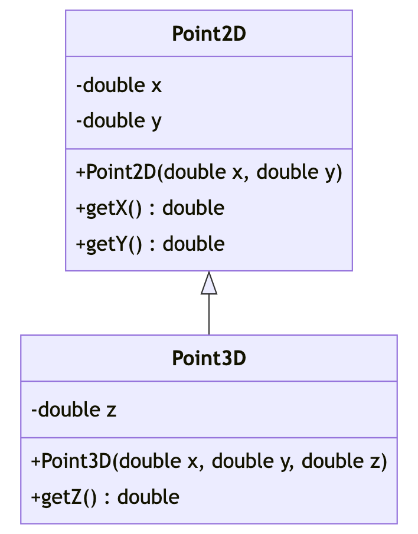
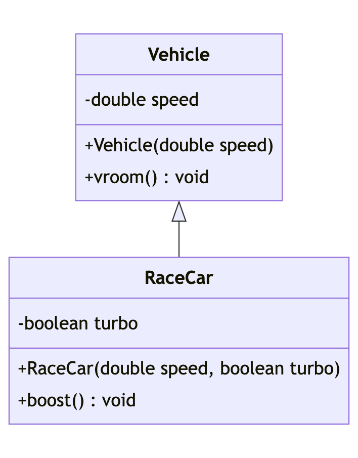

Unit 11: Inheritance
Learning Objectives
Students should
- understand inheritance as a mechanism to extend existing code.
- understand how inheritance models the IS-A relationship.
- know how to use the
extendskeyword for inheritance. - understand inheritance as a subtype.
- be able to determine the run-time type and compile-time type of a variable.
Extension with Composition
We have seen how composition allows us to compose a new more complex class out of existing classes, without breaking the abstraction barrier of existing classes. Sometimes, however, composition is not the right approach. Let's consider the following example. Let's suppose that we, as a client, want to add color as a property to our Circle.
Without penetrating the abstraction barrier of Circle, we can do the following:
1 2 3 4 5 6 7 8 9 10 | |
where Color is another abstraction representing the color of shapes.
What should we do if we want to calculate the area of our colored circle? Suppose we already have a ColoredCircle instance called coloredCircle. We could make circle public and call coloredCircle.circle.getArea(), or we could add an accessor and call coloredCircle.getCircle().getArea(). Both of these are not ideal, since it breaks the abstraction barrier and reveals that the ColoredCircle class stores a circle (the latter being slightly better than the first).
A better alternative is to let ColoredCircle provide its own getArea() method, and forward its call to Circle.
1 2 3 4 5 6 7 8 9 10 11 12 13 14 | |
Then, the client to ColoredCircle can just call coloredCircle.getArea() without knowing or needing to know how a colored circle is represented internally. The drawback of this approach is that we might end up with many such boilerplate forwarding methods. In fact, we need one boilerplate forwarding method for each method from Circle we want to access from ColouredCircle.
Extension with Inheritance
Recall the concept of subtyping. We say that \(S <: T\) if any piece of code written for type \(T\) also works for type \(S\). There is a quote that you can use to remember this.
Inheritance
"Whenever a superclass is needed, a subclass can be given."
The reason the quote above works is because due to inheritance, the subclass inherits all the (public) methods from the superclass. Put it another way, given \(S <: T\), if we know that \(T\) has a (public) method called foo, we are sure that \(S\) also has a (public) method called foo because the method is inherited by \(S\).
Now, think about ColoredCircle and Circle. If someone has written a piece of code that operates on Circle objects. Do we expect the same code to work on ColoredCircle? In this example, yes! A ColoredCircle object should behave just like a circle -- we can calculate its area, circumference, check if two circles intersect, check if a point falls within the circle, etc. The only difference, or more precisely, extension, is that it has a color, and perhaps has some methods related to this additional field. So, ColoredCircle is a subtype of Circle.
We now show you how we can introduce this subtype relationship in Java, using the extends keyword. We can reimplement our ColoredCircle class this way:
1 2 3 4 5 6 7 8 9 | |
We have just created a new type called ColoredCircle as a class that extends from Circle. We call Circle the parent class or superclass of ColoredCircle; and ColoredCircle a subclass of Circle.
We also say that ColoredCircle inherits from Circle, since all the public fields of Circle (center and radius) and public methods (like getArea()) are now accessible to ColoredCircle. Just like a parent-child relationship in real-life, however, anything private to the parent remains inaccessible to the child. This privacy veil maintains the abstraction barrier of the parent from the child, and creates a bit of a tricky situation -- technically a child ColoredCircle object has a center and a radius, but it has no access to it!
Line 6 of the code above introduces another keyword in Java: super. Here, we use super to call the constructor of the superclass, to initialize its center and radius (since the child has no direct access to these fields that it inherited).
The concept we have shown you is called inheritance and is one of the four pillars of OOP. We can think of inheritance as a model for the "is a" relationship between two entities.
With inheritance, we can call coloredCircle.getArea() without knowing or needing to know how a colored circle is represented internally and without forwarding methods.
super Limitation
In Java, if the call to super appears in a constructor, it has to appear as the first line in the constructor. The reasoning is that the call to super instantiate (i.e., allocate memory and invoke the constructor of superclass instance) the superclass object. Technically the current instance cannot exist without the existence of the superclass. More importantly, if the constructor invokes the method or access the fields of the superclass, they will be successful1.
You will see later that if a given class does not explicitly inherit another class, it will implicitly inherit from the Object class. So, the constructor we have written so far does not -- as its first line -- invoke the super keyword. How can it still work if we have the rule above? The answer is that similar to default constructor, if there is no call to super2, Java will automatically add the default super().
In combination with default constructor (or lack thereof), this may lead to potential problem that can be difficult to debug. Furthermore, the error messages may not be easy to understand as they do not give hint at a possibility of missing super(..).
Example Error
In this example, we omit the constructor for ColoredCircle. As such, the default constructor is added automatically. Since default constructor has no method body, the default super() is also automatically added.
1 2 3 4 5 | |
Error message
1 2 3 4 5 6 7 | |
In this example, we will omit the call to super(..). Therefore, the default super() is added. But this would have invoked the constructor of Circle that accepts no parameter. Unfortunately, no such constructor is available. Hence, the error message seen.
1 2 3 4 5 6 7 8 | |
Error message
1 2 3 4 5 6 7 | |
Finally, if we did not call super(..) as the first statement in the constructor but call it after the first statement, we will have an additional error message shown on top of other error messages.
1 2 3 4 5 6 7 8 | |
Error message
1 2 3 4 | |
Exception to the Rule
There is an exception to this rule. We do not require a call to super(..) and a default super() will not be added if the first statement in the constructor is a call to this(..). But since this is related to method overloading, we will revisit this concept again in the unit for overloading.
When NOT to Use Inheritance
Inheritance tends to get overused. In practice, we seldom use inheritance. Let's look at some examples of how not to use inheritance, and why.
You may come across examples online or in books that look like the following:
1 2 3 4 5 6 7 8 9 10 11 12 13 14 15 | |
The difference between these implementations and the one you have seen in Unit 9 is that it uses inheritance rather than composition.
Circle implemented like the above would have the center coordinate inherited from the parent (so it has three fields, x, y, and radius); Cylinder would have the fields corresponding to a circle, which is its base and height. In terms of modeling the properties of circle and cylinder, we have all the right properties in the right class.
When we start to consider methods encapsulated with each object, things start to break down. Consider a piece of code written as follows:
1 2 3 4 5 | |
Since Cylinder is a subtype of Point according to the implementation above, the code above should still work also if we replace Point with a Cylinder (according to the semantic of subtyping). But it gets weird -- what is the meaning of a Circle (in 2D) containing a Cylinder (in 3D)? We could come up with a convoluted meaning that explains this, but it is likely not what the original implementer of foo expects.
The message here is this: Use composition to model a has-a relationship; inheritance for a is-a relationship. Make sure inheritance preserves the meaning of subtyping.
Type Checking
Run-Time Type
Recall that Java allows a variable of type \(T\) to hold a value from a variable of type \(S\) only if \(S <: T\). Since ColoredCircle <: Circle, the following is not allowed in Java:
1 | |
but this is OK:
1 | |
where p is a Point object and blue is a Color object. But wait, how do we know are they really ok or not?
Consider the first case. Notice how ColoredCircle potentially has more methods than Circle. First, ColoredCircle inherits all the methods from Circle and we may also add new methods related to the Color. So if we instantiate a ColoredCircle as a Circle, how do we fill in the missing functionality? Since we cannot, Java simply says that this is an error.
On the other hand, the second case is really ok because Circle has fewer methods than ColoredCircle. In fact, because of inheritance, whatever a Circle can do, a ColoredCircle can also do. After all, the methods in Circle can be used automatically in ColoredCircle without boilerplate forwarding.
Also, recall that Circle is called the compile-time type of c. Here, we see that c is now referencing an object of subtype ColoredCircle. Since this assignment happens during run-time, we say that the run-time type of c is ColoredCircle. The distinction between these two types will be important later.
In short, assuming \(S <: T\) and the following assignment
1 | |
- Compile-time type of
xisT. - Run-time type of
xisS.
To put it in a broader picture, we can look at what happened on assignment lhs = rhs. We can deduce the compile-time type of lhs and rhs independently. Then, the allowed assignment happen if the type of rhs is the subtype of lhs. So, assuming \(S <: T\), we have the following table.
| Assignment | Allowed? |
|---|---|
T x = new T() |
|
T x = new S() |
|
S x = new T() |
|
S x = new S() |
Compile-Time Type
A common confusion made by programmers who are more familiar with dynamic typing like Python and JavaScript is to confuse compile-time type and run-time type. The compile-time type is the type during the declaration while run-time type is the type actually created using the new keyword.
We will use the following class declarations for our example.
1 2 3 4 5 6 7 8 9 10 11 12 13 14 15 | |
Now consider the following code snippet:
1 2 | |
Such a re-assignment is allowed because the compile-time type of x is T. The assignment at Line 1 is allowed because S1 <: T. Similarly, the assignment at Line 2 is allowed because S2 <: T. The common mistake is to think mentally that the compile-time type of x is S1 because that's actually the run-time type.
Java cannot use the information from run-time type because the analysis involving run-time type can be extremely complicated. As such, Java will only use compile-time type information for its type checking. To illustrate the potential complexity, consider the following method where we have S1 <: T and S2 <: T.
1 2 3 4 5 6 7 | |
Here, we to know the actual run-time type, Java compiler will have to actually proof that the Riemann hypothesis is true. Unfortunately, it is currently still an open problem in Mathematics3.
So the only thing known about x from the perspective of the compiler is that it is of compile-time type T. We can extend this reasoning further to the following code snippet.
1 2 | |
The code snippet above will give the following compilation error:
1 2 3 4 5 6 | |
To reiterate, the reason is because from the point of view of the compiler, x is of compile-time type T. Since the type T has no method called bar, we have a (potential) error. Note how the run-time type information is not used at all for the analysis.
The run-time type is actually S1 which actually has the method bar. But this information is irrelevant for compile-time type checking. The reason is the same as above, imagine that we replace Line 1 with T x = makeT(), then the compiler will have to proof Riemann hypothesis. Our poor compiler has to be smarter than all the Mathematicians.
Nominal Subtyping
Java subtyping relationship is known as nominal subtyping. This means that the subtyping relationship has to be explicitly declared. The keyword to declare this is extends. So, we may have two classes that somehow incidentally have the same public methods and they are still treated as two incompatible types. Consider the two badly named implementation below.
1 2 3 4 5 6 7 8 9 10 11 12 13 14 15 16 17 18 19 20 21 22 23 | |
1 2 3 4 5 6 7 8 9 10 11 12 13 14 15 16 17 18 19 20 21 22 23 | |
Looking only at the accessible public methods, we may think that a function written to work with Point3D should work with ColorRGB and vice versa. All the methods that are available in Point3D are also available in ColorRGB. In fact, the codes are identical except for the class name.
1 2 3 | |
Unfortunately, unless we explicitly add a subtyping relationship between Point3D and ColorRGB, they remain incompatible classes. So the method display above cannot be used for ColorRGB. We have to write a different method that accepts ColorRGB as parameter.
This also relates to the anti-symmetry property of subtyping relationship in Java. Java prevents a cyclic subtyping relationship. Try the example below and see the error message from the compiler.
Cyclic Inheritance
1 2 3 4 5 | |
Compilation Error
1 2 3 4 | |
Class Diagram (Part 4)
So far, we have learnt how to draw a class diagram for a single class. With inheritance, we will need to connect two or more classes. We have seen this idea in subtyping between primitive types where we use a solid arrow to connect two types. The same idea applies here but instead of connecting two primitive types, we connect reference types.
Consider the following classes:
1 2 3 4 5 6 7 8 9 10 11 12 13 14 15 16 17 18 19 20 21 22 23 24 25 26 27 28 29 30 | |
As a good practice, we will draw the supertype on top of the subtypes.

Analysis of Class Diagram
The advantage of using class diagram for our design is that we can analyze class diagram without the actual implementation. Take for instance, the class diagram below.

Without even looking at the code, we can see that a Vehicle can go vroom vroom. Additionally, we can also see that a RaceCar can also go vroom vroom. Although RaceCar has no method called vroom() to go vroom vroom, it inherits the method from the class Vehicle. We can also see that RaceCar has an additional method called boost.
-
Truthfully, this reasoning is faulty because (i) it is too restrictive and (ii) it does not solve the problem stated. Java allows the call to super to invoke another function (e.g.,
super(f(x))). Then,f(x)can actually invoke methods from superclass. In any case, that's the typical reasoning given by Java, but just take it with a grain of salt. ↩ -
There should also be no call to
thisin the constructor, but that will only be discussed when we talk about method overloading. In particular, we may overload the constructor. ↩ -
If you do solve it, there is a $1 million prize for it. Please kindly remember who introduced you to this problem and share the prize. ↩